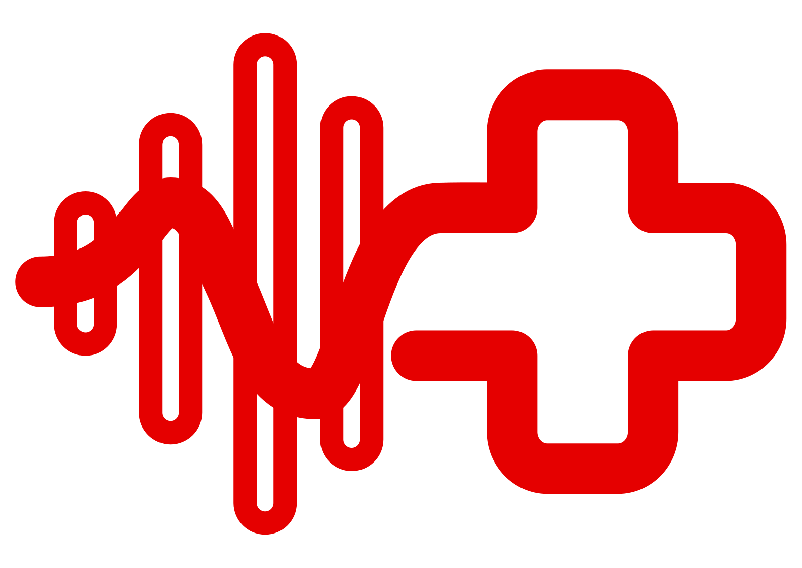

KAPR
Životní funkce
TF
82
TK
120/80
SpO2
98%
DF
14
CRT
<2s
AVPU
A
Poslední hodnoty:
16:15:28 - Kapilární návrat (<2s), Vědomí (AVPU: A)
16:15:12 - SpO2 (98%), Dechová frekvence (14/min)
Strukturovaný stav pacienta
DrABCDE
16:15
Průchodnost dýchacích cest
Volné
SpO2
98%
Srdeční frekvence
82
Krevní tlak
120/80
Kapilární návrat
<2s
Léčiva
16:15
Adrenalin
Amiodaron
Kyslík (O2)
Ano
Noradrenalin
Atropin
Adenosin
Midazolam
Intervence
Zajištění dýchacích cest
Umělá plicní ventilace
Intubace
KPR
Periferní žilní přístup
Defibrilace
Intraoseální přístup
Imobilizace